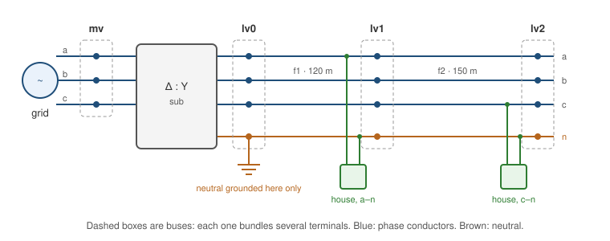

Anatomy of a case
One small four-wire feeder, read block by block, then solved.
A BMOPF case is a nested dictionary: component types at the top level, each holding id => component. This page reads one bundled case from top to bottom so that the reference pages have something concrete to attach to. Every block runs when the documentation is built.
The case is a synthetic European low-voltage feeder: a 10 kV source, a 400 kVA delta-wye transformer, two four-wire cable sections, three single-phase houses and one three-phase shop.

using BMOPFTools, JSON3
path = joinpath(pkgdir(BMOPFTools), "test", "data", "profiler_systems",
"eu_tn_four_wire.json")
net = parse_bmopf(path)
show_block(x) = JSON3.pretty(stdout, x) # print a block as JSON
sort([k => length(v) for (k, v) in net if v isa AbstractDict && !startswith(k, "_")]; by = first)8-element Vector{Pair{String, Int64}}:
"bus" => 4
"line" => 2
"linecode" => 1
"load" => 4
"meta" => 2
"terminal_conventions" => 3
"transformer" => 1
"voltage_source" => 1Everything is in SI units: volts, amperes, ohms, watts, meters, radians. Nothing in the file is per-unit.
Terminal roles
show_block(net["terminal_conventions"]){
"neutral": [
"n"
],
"earth": [
],
"phase": [
"a",
"b",
"c"
]
}The labels are free-form strings. This block says which of them are phase conductors and which is the neutral, once, for the whole case. earth is for dedicated earth wires and is empty in most cases.
Buses
A bus is a location that hosts several terminals, one per conductor.
show_block(net["bus"]["mv"]){
"neutral_terminal": null,
"terminal_names": [
"a",
"b",
"c"
]
}show_block(net["bus"]["lv0"]){
"neutral_terminal": "n",
"perfectly_grounded_terminals": [
"n"
],
"terminal_names": [
"a",
"b",
"c",
"n"
]
}The medium-voltage bus is three-wire. The transformer's low-voltage bus has four terminals, and perfectly_grounded_terminals pins its neutral to exactly 0 V: the substation grounding. The buses further down the feeder have a neutral terminal with no grounding, so their neutral voltage is free to rise under unbalanced load.
The source
show_block(net["voltage_source"]["grid"]){
"terminal_map": [
"a",
"b",
"c"
],
"v_angle": [
0,
-2.0943951023931953,
2.0943951023931953
],
"bus": "mv",
"v_magnitude": [
5773.502691896258,
5773.502691896258,
5773.502691896258
]
}v_magnitude is the voltage of each terminal to ground: 5773.5 V is 10 kV/√3. The angles are in radians. The source fixes these phasors and supplies whatever current the network draws, so it is both the voltage reference and the slack.
The transformer
Transformers are grouped by subtype; this one is a delta_wye.
show_block(net["transformer"]["delta_wye"]["sub"]){
"r_series_from": 1.25,
"bus_to": "lv0",
"terminal_map_to": [
"a",
"b",
"c",
"n"
],
"s_rating": 400000,
"terminal_map_from": [
"a",
"b",
"c"
],
"r_series_to": 0.002,
"x_series_from": 5,
"x_series_to": 0.008,
"bus_from": "mv",
"v_nom_from": 10000,
"v_nom_to": 400
}The delta side connects to three terminals and the wye side to four: the fourth is the star point, brought out to the bus neutral. v_nom_from and v_nom_to are the nameplate line-to-line voltages, the series impedances are in ohms on each winding's own side, and s_rating is in VA. Transformer models explains every field.
Lines and their linecode
A line carries topology and a length. Its impedance lives in a shared linecode, as per-meter matrices.
show_block(net["line"]["f1"]){
"linecode": "cable",
"bus_to": "lv1",
"length": 120,
"terminal_map_to": [
"a",
"b",
"c",
"n"
],
"terminal_map_from": [
"a",
"b",
"c",
"n"
],
"bus_from": "lv0"
}lc = net["linecode"]["cable"]
R = [lc["R_series_$(i)_$(j)"] for i in 1:4, j in 1:4] .* 1000 # Ω/km4×4 Matrix{Float64}:
0.3 0.05 0.05 0.05
0.05 0.3 0.05 0.05
0.05 0.05 0.3 0.05
0.05 0.05 0.05 0.3The matrix is 4 × 4 because the cable has four conductors, in the order of the line's terminal maps. The off-diagonal entries are the mutual coupling between conductors: a current in one conductor produces a voltage drop along all of them. This is the matrix form of Ohm's law, $\Delta\mathbf{V} = \mathbf{Z}\,\mathbf{I}$. The reactance matrix X_series_i_j has the same shape, and i_max rates each conductor, including the neutral.
Loads
show_block(net["load"]["h1"]){
"q_nom": [
1150.4
],
"terminal_map": [
"a",
"n"
],
"v_nom": [
230
],
"p_nom": [
3500
],
"bus": "lv1",
"configuration": "SINGLE_PHASE"
}A device names the terminals it connects to. This house sits between phase a and the neutral, so it is SINGLE_PHASE and its power arrays have one entry. v_nom is the voltage at which a voltage-dependent load model draws its nominal power; with the default constant-power model it is not used. The other loads follow the same pattern; the shop is a three-phase WYE load with three entries:
[id => (net["load"][id]["terminal_map"], net["load"][id]["p_nom"][1]) for id in sort(collect(keys(net["load"])))]4-element Vector{Pair{String, Tuple{Vector{Any}, Int64}}}:
"h1" => (["a", "n"], 3500)
"h2" => (["b", "n"], 2500)
"h3" => (["c", "n"], 4000)
"shop" => (["a", "b", "c", "n"], 5000)Check it, then solve it
analyze profiles the case before any solver sees it.
report = analyze(net)
[(f.code, f.component_id) for f in report.findings if startswith(String(f.code), "E.")]Tuple{String, Any}[]No errors. A power flow then returns one voltage per terminal:
using JuMP, Ipopt
optimizer = optimizer_with_attributes(Ipopt.Optimizer, "print_level" => 0)
result = solve_pf(net; optimizer = optimizer)
far = result["bus"]["lv2"]
[t => round(far[t]["vm"], digits = 2) for t in ["a", "b", "c", "n"]]4-element Vector{Pair{String, Float64}}:
"a" => 228.15
"b" => 228.28
"c" => 227.26
"n" => 0.97Three things to read from the far-end voltages:
- The phase voltages differ, because the loads are spread unevenly over the phases.
- The neutral is not at 0 V. Its return current flows through the neutral conductor's impedance back to the grounded star point.
- What a house receives is the phase voltage minus the neutral voltage, as phasors. That is why the neutral is modeled.
Where each block is specified
| Block | Reference | Background |
|---|---|---|
terminal_conventions, bus | Data model conventions | Buses & terminals primer, Ground, neutral & earth return |
voltage_source | Conventions: loads and generators | Units, bases & economics |
transformer | Transformer models | From test report to transformer model |
line, linecode | Conventions: lines | Line geometry & impedances |
load | Device parameter indexing | Choosing a load model |
| array lengths in general | Device parameter indexing | — |
Other component types follow the same pattern: generator, ibr (with control_profile), shunt, capacitor, switch, and the DC tables. They are described in Data model conventions.
To build a case of your own, start from this file or from First case; to bring one in from OpenDSS, see the conversion guide.